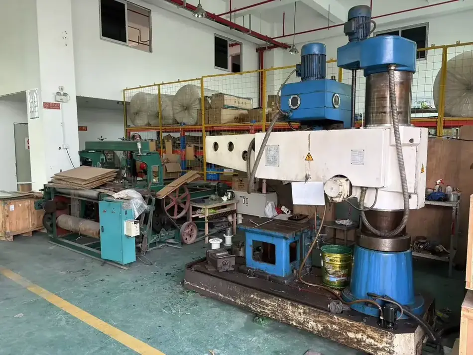
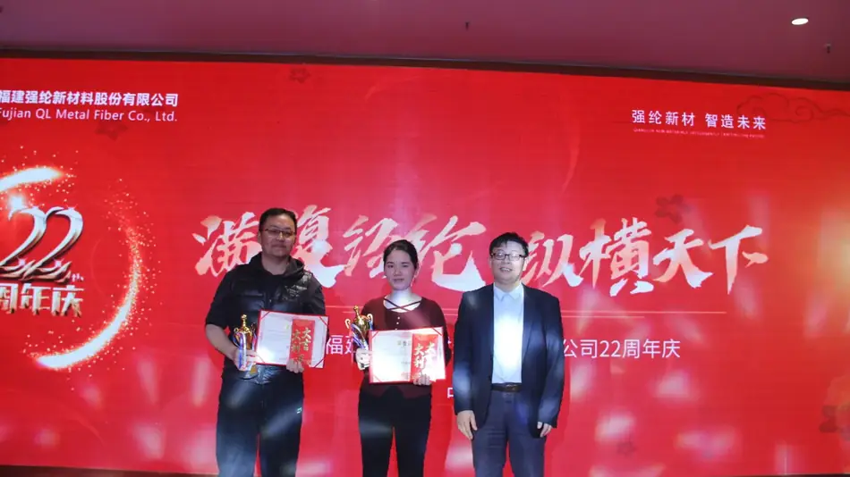

Fujian QL Metal Fiber Co., Ltd. is a Chinese manufacturer of metal fiber and the products built from it. We draw stainless steel and other alloys down to 2 µm, spin and weave it, lay and sinter it into porous media, and assemble that media into filter elements and separation equipment.
The company was founded in 2002 in Longyan, Fujian, and is listed on China's National Equities Exchange and Quotations under code 872336. It is recognised as a National High-Tech Enterprise and as a national specialised and sophisticated “Little Giant” enterprise, and operates an ISO 9001 certified quality management system.
What matters commercially is that the chain is continuous. A filter element supplier who buys media cannot change the pore structure when your differential pressure rises too quickly. We can, because the media is ours — and because the laboratory that measures the change is in the same building.
Four divisions
- Filter media. Sintered metal fiber felt, needled media, sintered mesh.
- Filter elements. Pleated cartridges, mesh elements, high-temperature bags, housings.
- Purification equipment. Coalescing oil recovery systems for hydrometallurgical extraction circuits.
- Thermal and power. Metal fiber textiles for glass processing, burners and high-temperature service.
A separate yarn business supplies conductive fiber, blended yarn and heating wire for textile and electronics customers.
| Item | Detail |
|---|---|
| Legal name | Fujian QL Metal Fiber Co., Ltd. |
| Founded | 2002 |
| Listing | NEEQ 872336 |
| Head office and plant | No. 11 Huangbang Road, Longyan Economic & Technological Development Zone, Longyan, Fujian, China |
| Quality system | ISO 9001 certified |
| Status | National High-Tech Enterprise; national “Little Giant” enterprise |
| Core material | Bundle-drawn metal fiber, 2 µm and up |
| Alloys | 316L, 304, 302, FeCrAl, nickel-based alloys, Hastelloy, Monel, copper, titanium |
| Export markets | Europe, India, Southeast Asia, Türkiye and the Middle East, Japan and Korea, the Americas |
| Contact | export@qlfiber.com |
Where it is made




Send us your operating conditions, and we will send samples.
Temperature, medium, pressure, filtration rating, resistance or porosity — give us the numbers you work with and our engineers will recommend a configuration, quote it and arrange samples for your own testing.